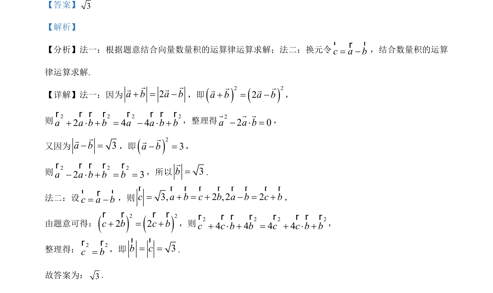

考点：平面向量数量积 向量的模 向量运算律
该题考查利用向量数量积的运算律求解向量的模，涉及两种方法转化条件求解。

📄 原 PDF 第 9 页：
素材/真题/吉林/2008-2024·（吉林）数学高考真题/2023年高考数学试卷（新课标Ⅱ卷）（解析卷）.pdf
【答案】3 【解析】 【分析】法一：根据题意结合向量数量积的运算律运算求解；法二：换元令c a b= rrr，结合数量积的运算 律运算求解. 【详解】法一：因为2a b a b = r rr r，即2 22a b a b = r rr r， 则2 2 2 22 4 4a a b b a a b b × = × r r r r r r r r，整理得22 0a a b × =r r r， 又因为 3a b =rr，即23a b =rr， 则2 2 22 3a a b b b × = =r r r r r，所以3b=r . 法二：设c a b= rrr，则3, 2 , 2 2c a b c b a b c b= = = r r r r r r r r r ， 由题意可得：2 22 2c b c b = r r r r ，则2 2 2 24 4 4 4c c b b c c b b × = × r r r r r r r r， 整理得：2 2c b=r r，即 3b c= =rr . 故答案为：3.